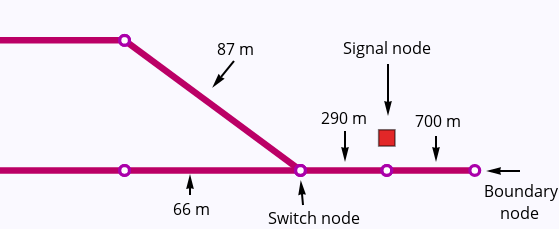
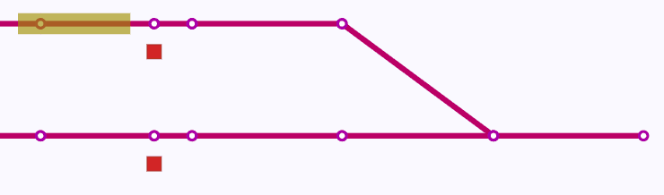
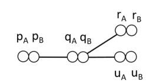
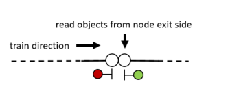

Rolling

Rolling is a fast railway performance analysis tool for use in construction project verfication.
Features
Dispatch mode

The dispatch plan (1) is executed by sending commands to the interlocking controller (2), which communicates movement authority to the trains (3).
Rolling calculates train trajectories with a given dispatch plan using an infrastructure and interlocking controller model with the following features:
-
Topology and lengths -- trains travel on a model of the railway network with given distances, guided by switches and other movable track elements.

-
Laws of motion -- trains move within the limits of given maximum acceleration and braking power. A train driver model is used to plan ahead for braking so that the train respects its given movement authority.

-
Allocation of resources -- a resource-based model of the interlocking ensures that conflicting routes are not communicated to the trains. Requested movement may be queued so that the dispatch happens as soon as resources are available.

-
Communication -- traditional optical signalling and automatic train protection systems impose a communication constraint which may be the cause of lower performance. Rolling's communication model is suitable for optical signalling, point-based and linear traditional train protection systems, and radio-based communications such as ETCS.

Verification mode
Check that performance requirements are satisfied. Fully automated planning produces a dispatch plan which satisfies the requirements, or reports that no such plan exists.

-
Specification format -- specify performance properties at a "high level", meaning that unneccesary details, such as specific tracks, signals, and routes, are left out. This saves effort and is especially useful when these details are unknown or subject to change, as is the case in construction projects.
-
Smart planning -- solve complicated maneuvering puzzles automatically.

-
Full automation -- meaning that as your track and component layout changes during the project, performance specifications can be verified again with no extra effort. Errors which would cause operational problems can be caught immediately.
Use case
For construction projects, where the track layout plan is under development, Rolling provides:
- Detailed analysis of capacity bottlenecks.
- Regression testing after project changes.
Dispatch mode (simulation)
Command-line interface
Rolling -- simple railway simulation
USAGE:
rolling [FLAGS] [OPTIONS] <infrastructure> <routes> <dispatch>
FLAGS:
-h, --help Prints help information
-V, --version Prints version information
-v, --verbose Verbose mode (-v, -vv)
OPTIONS:
-f, --format <format> Output format profile: full | timing
-g, --graphical <graphical> Output directed graph for graphical conversion
-J, --javascript <javascript> Output JSON history as JavaScript
-j, --json <json> Output JSON history file
-n, --visits <visits> Output node visit times to file
ARGS:
<infrastructure> Static infrastructure file in the Rolling D-Graph format
<routes> Route file in the Rolling Route format
<dispatch> Dispatch file in the Rolling Dispatch format
Model
The input model for rolling consists of three main components:
- The infrastructure üåç model contains the tracks, movable elements, and signalling and interlocking components which are needed to do a running time analysis of railway dispatching.
- The interlocking üîí model describes the elementary routes that can be dispatched.
- The dispatch üëã list contains times of train and route setting.
rolling uses these components together to calculate a
history üìà
of events, which contains the state of the infrastructure at each point in time, and the dynamics of the trains as they move on the infrastructure.
Each of these are described in more detail in their respective sections.
Infrastructure üåç
The rolling infrastructure model uses a double node graph model. To understand the motivation for the double node graph, consider the
railway junction in the figure below.

On the railway network, paths p-q-r and p-q-u exist, in both directions. However, in a conventional undirected graph representation, there would also be a path r-q-u.

When we extend the graph concept to include two sides of each node, there is no longer a path r-q-u.

So, the double node graph is similar to a graph, with the difference that each node has two sides. A train entering a node from an edge connected to one side of the node can only exit the node through edges on the opposide side of the node.
This model allows a sense of local directedness without deciding on a global direction concept such as up/down or outgoing/incoming often used in railway engineering. A global directionality requires considering special cases to handle railway networks where a train's up/down direction may change without the train reversing its direction, such as the balloon loop example.
Each side of the node may have a set of objects, which are read by a passing train on the exit side of the node, i.e. the opposite side of the node from the edge on which the train entered.

Input format
The DGraph input file format consists of statements separated by whitespace which describe the double nodes, both sides together, and various edge types with corresponding lengths.
Nodes üî∂
The syntax for describing nodes is as follows:
node <name>[(<objects>)]-<name>[(<objects>)]
Examples:
node n1-n2
node n2-n3(signal s1)
node n3(enter sec1)-n4
Edges ↔
Edges are either linear, switches or boundaries. Each node may only be mentioned in one edge statement. Nodes which are not mentioned in edge statements are assumed to be the end of a track.
Linear
Linear edges simply connect two nodes by a length of track using the syntax linear <node>-<node> <distance>.
Example:
linear n1-n2 124.5
Switches
Switches Currently, only two-way switches are supported.
Example:
switch sw1 left n1-(n2 200.0, n3 220.0)
Boundaries
Boundaries are nodes where a train may enter or leave the model. When entering, the train's front simply appears at the node, while the body of the train is still outside of the model. When leaving, the front of the train visits the boundary node and the train travels on until the back of the train visits the boundary node, after which the train is considered to be finished.
The name of the boundary node is used in dispatch plans and in route files to refer to the location of the model boundary.
The syntax is boundary <node>.
Example:
boundary n1
Objects
Each node may contain zero or more objects, which appear within the parentheses after the node name in the node statement.
The possible object types are:
-
Signal üö¶: a signal with the given name is located at the current node. Note that this has no actual impact on trains, as only the
sightstatements can add the signal to the train's communication list. This statement is used for visualization purposes.Syntax:
signal <name>Example:
signal sig1 -
Enter section ⬇: a train whose front passes the current node will enter a detection section. Note that a train detector (e.g. axle counter) or a track circuit border will typically need to be translated into four
enter/exitstatements, anenterfor the section on each side of the detector, and anexitfor each section on the opposite sides. The rationale for this representation is that it is a low-level instruction that the train can simply read and execute, and that is allows for more exotic train detection setups, such as overlapping sections.Syntax:
enter <section-name>Example:
enter section1 -
Exit section ⬆: a train whose back passes the current node will exit a detection section.
Syntax:
exit <section-name>Example:
exit section1 -
Sight üëÅ: after visiting the current node, trains can see a given signal for a given travel distance. Typically, this node will appear at a given distance before a signal, and the given distance will be the travel distance from the sight object's node to the signal.
Syntax:
sight <signal-name> <distance>Example:
signal sig1 400.0
Switches may also be considered to be objects, but appear in their own statements since they also relate nodes (see the switches section).
An example of various objecs on a double node statement:
node n1(enter section1, exit section2)
-n2(signal sig1, sight sig2 800.0, exit section1, enter section2)
Interlocking üîí
An interlocking is the safety-critical low-level control system in railways, tasked with ensuring that all actions involving signals and movable elements are performed in a safe manner.
The main operating mode of the interlocking is to take requests for setting a route, and then moving track elements and giving signals if this route is safe to set. Routes are the atomic unit of allocation from the dispatcher's point of view. Note that the atomic unit of de-allocation is typically smaller than the route, a feature of interlockings which is called partial release.
The routes file contains set of whitespace-separated route statements, each declared by the following syntax:
route <name> {
entry <signal-name>
exit <signal-name>
entrysection <section-name>
length <number>
sections [<section-name>, ...]
switches [<switch-name> <switch-position>, ...]
contains [<node-name>, ...]
<release>*
}
The lines in the above route statement contain the following:
-
A route has a name, which is the identifier used from the dispatch plan to request this route for activation.
-
The entry is an identifier for a signal which is used to signal the movement authority given by this route when it is activated.
-
The exit is an identifier for a signal which is not directly used for simulation, but which is need for planning for knowing which routes can extend this route.
-
The entry section is an identifier for a detection section. When this detection section becomes occupied, the route is considered to be in use, and the signal stops signalling movement authority to avoid other trains from using the same route before it has been activated again.
-
The length is a number indicating the driving length of the route path. This length is used by the planner, and also by the simulator in the communication of movement authority from the control system to the train, in case of a signalling system which transfers movement authority lengths (either on-line, through train protection systems or radio communication, or off-line, by having the train driver familiarize with lengths though a railway line's handbook). This length is not adjusted for stopping margins.
-
The section list is a comma-separated list of section which must be exclusively allocated before the route can be activated. Sections should be listed in the order of occupancy by a train running the route path.
-
The switch list is a comma-separated list of switches and corresponding positions (e.g.
sw1 left). -
The contains list is a comma-separated list of node which the route contains. It is used for planning, to fulfil requirements of visiting specific nodes by activating routes.
-
Finally, a list of release conditions determine how the resources required by the route are de-allocated. The syntax is as follows
release { length <number> trigger <section-name> resources [<resource-name>, ...] }The lines in the above release statement contain the following:
- The length is a number indicating the length of the partial route path.
- The trigger is an identifier for a detection section. After this trigger has turned occupied and then subsequently vacant again, the resources are released.
- The release list is a comma-separated list of resources, i.e. sections and switches, which cease to be allocated after the trigger event has occurred.
Note that if no releases are specified, a default release condition is added which frees the whole length and all resources after the last
Entry / exit routes
Two special cases of route syntax exist for the entry and exit from the model.
modelentry <name> from <boundary-name> {
exit <signal-name>
(length, section, switches, contains as in route)
}
modelexit <name> to <boundary-name> {
entry <signal-name>
entrysection <detector-name>
(length, section, switches, contains as in route)
}
Overlap / safety zone
Many railway administrations require a given length of track after the exit signal to be vacant or exclusively allocated for a route to be activated. This track section is called overlap (british) or safety zone (international). Overlaps require special logic for allowing the extension of a route
Overlaps are currently not supported.
Flank protection
Flank protection can be implemented by adding requirements of exclusive allocation of resources such as detection sections and switches.
Dispatch üëã
The dispatch plan file represents a timeline of the following types of events:
- Trains entering the infrastructure from a given entry route.
- A dispatcher requesting the interlocking to activate train routes.
The train and route statements can be seen as launching concurrent processes in the simulation.
Statements
Train üöÜ
A train starting at the current time is described by the following syntax:
train <name> l=<number> a=<number> b=<number> v=<number> <route-name>
The parameters are:
- Name is an identifier for the train.
- Length
l=<number>sets the length of the train in meters. - Acceleration
a=<number>sets the maximum acceleration of the train in N/m². - Braking deceleration
b=<number>sets the maximum deceleration of the train in N/m². - Maximum velocity
v=<number>sets the maximum velocity of the train in m/s. - Route name
<route-name>names an entry route which must be activated before the train enters from the entry routes' specified model boundary.
The train, seen as a process, executes in three stages:
- Activation: the given entry route of the train must be activated. If its resources are occupied, or it is waiting for movable elements to come in to their positions, the train does not yet enter the model and waits for the route activation process of the entry route to finish.
- Running: the train is partially or fully inside the infrastructure model. It runs by:
- travelling according to its given movement authority
- setting the occupied flag on sections it enters
- receiving updated movement authority from signal which are in sight
- Finished: when the train has exited through a model boundary, it is removed from the model and considered finished.
Route üõ§
A route request dispatches at the current time is represented using the following syntax:
route <route-name>
This statement starts a route activation process. The process will wait until all resources are available before reserving the resources and starting to move any movable elements. This means that two conflicting routes may be requested, after which the first route's activation will finish, and the second route to be requested will remain waiting until all required resources are available.
Wait ⏱
Passing time is represented by a separate statement:
wait <number>?
The <number> parameter gives the time to pass in seconds. Note that no time passes after starting processes unless explicitly described by a wait statement.
If there are no further statements in the dispatch plan, the simulation will run until no more processes are scheduled, or all processes are stuck, such as when a train is waiting at a red light, but no more routes will be dispatched.
The wait statement may be given without a time parameter. This will cause the simulation to wait until all route activations are finished (including route activations which are part of a train's activation process). This may be used to ensure that one set of route allocations happen before another. For example, the verification mode produces a plan without wait times, but which has a series of steps which need to happen in the given order. The un-timed wait statement acts as a synchronization barrier for the route activation processes which are currently running.
History üìà
The history is the main output from the rolling dispatch mode.
Full history
The full history consists of separate histories for the infrastructure, and of each train. The format is:
- A list of infrastructure / interlocking events:
- Wait: time passing
- Route: status of a route, pending/active/released.
- Authority: a signal's given movement authority: None or a length.
- Reserved: the lock status (locked = true/false) for exclusive reservation of an infrastructure resource (switch or detection section)
- Occupied: detection section's occupancy status (occupied = true/false)
- Position: position of movable track element (switch left/right)
- A list of for each train containing the history of its dynamics:
- Wait: time passing. This form is generally only used when the train is not in the running state, as time deltas when running are given in the Move item.
- Node: front of train arrives at node
- Edge: front of train begins traveling along edge from source node to target node, with a specified distance. The target node may be omitted when the train is exiting the model.
- Sight: the train starts or stops receiving information from an infrastructure object
- Move: a time delta, a driver action (accelerate/brake/coast), a distance delta and the train's updated velocity.
An example of contents (the specifics of the formatting are likely to change):
# Infrastructure history:
> Route(0, Pending)
> Route(0, Active)
> Route(1, Pending)
> Reserved(2, true)
> Authority(0, Some(1750.0))
> Route(1, Active)
> Wait(1.4142135623730951)
> Wait(8.585786437626904)
> Wait(15.0)
> Wait(0.10000000000000142)
> Wait(4.899999999999999)
> Occupied(2, true)
## Train "t1" TrainParams { length: 200.0, max_acc: 1.0, max_brk: 0.9, max_vel: 10.0 }:
> Node(0)
> Node(1)
> Edge(1, Some(2))
> Move(1.4142135623730951, Accel, DistanceVelocity { dx: 1.0000000000000002, v: 1.4142135623730951 })
> Node(2)
> Sight(0, true)
Simplified history
The simplified history is a list of trains' arrival times at nodes. This output format is used for example by the verification mode to check whether timing constraints are satisfied.
Example:
t1 0 b1
t1 0 n1
t1 1.4142135623730951 n2
t1 1.4142135623730951 n3
t1 30 n4
t1 30 n5
Simulation examples
Simplest examples
Single
This is the simplest example of a working train station in rolling.
The infrastructure is a single signal with detection sections in the front and back.
boundary b1
node b1-n1(enter a1,sight sig 100.0)
linear n1-n2 100.0
node n2-n3(signal sig, enter a2)
linear n3-n4 100.0
node n4-b2(exit a2)
boundary b2
There is one entry and one exit train route.
modelentry ri from b1 {
exit sig
length 100.0
sections [] switches [] contains []
}
modelexit re to b2 {
entry sig
entrysection a2
length 10000.0
sections []
switches [] contains []
}
We dispatch a short train.
train t1 l=35.0 a=1.0 b=1.0 v=10.0 ri
wait 30.0
route re
And the results from rolling are:
Single
This is the simplest example of a working train station in rolling.
The infrastructure is a single signal with detection sections in the front and back.
boundary b1
node b1-n1
linear n1-n2 1.0
node n2-n3(sight s1 249.0)
linear n3-n4 249.0
node n4(exit a1)-n5(signal s1, enter a1)
linear n5-n6 1150.0
node n6-n7(sight s2 600.0)
linear n7-n8 600.0
node n8(exit a2, enter a1)-n9(signal s2, exit a1, enter a2)
linear n9-n10 925.0
node n10-n11(sight s3 75.0)
linear n11-n12 75.0
node n12(enter a2, exit a3)-n13(signal s3, exit a2, enter a3)
linear n13-n14 500.0
node n14(enter a3)-b2(exit a3)
boundary b2
There is one entry and one exit train route.
modelentry ri from b1 {
exit s1
length 250.0
sections [] switches [] contains []
}
modelexit re to b2 {
entry s3
entrysection a3
length 5000.0
sections [] switches [] contains []
}
route r1 {
entry s1 exit s2
entrysection a1
length 1750.0
sections [a1]
switches []
contains []
}
route r2 {
entry s2 exit s3
entrysection a2
length 1000.0
sections [a2]
switches []
contains []
}
We dispatch a short passenger train.
train t1 l=200.0 a=1.0 b=0.9 v=10.0 ri
route r1
wait 150.0
route r2
route re
And the results from rolling are:
Two track station
train t1 l=100.0 a=0.5 b=0.5 v=10.0 ri
route rleft
wait 110.0
route releft
Multiple trains on a two-track station
Release of resources
In order to have multiple trains using the same routes at different times, resources need to be released
after one train has finished the route. We may use the release statement inside a route to specify
one or more groups of resources which may be release, and which detector triggers the release.
modelentry ri from b1 {
exit sa
length 500.0
sections [] switches [] contains []
}
modelexit re1 to b2 {
entry s1x
entrysection a2
length 8000.0
sections [a2]
switches [] contains []
}
modelexit re2 to b2 {
entry s2
entrysection a2
length 8000.0
sections [a2]
switches [] contains []
}
route r1 {
entry sa exit s1
entrysection a1
length 600.0
sections [a1]
switches [sw1 left]
contains []
}
route r1x {
entry s1 exit s1x
entrysection a3
length 200.0
sections [a3]
switches []
contains []
}
route r2 {
entry sa exit s2
entrysection a1
length 800.0
sections [a1]
switches [sw1 right]
contains []
}
Dispatch
train t1 l=100.0 a=0.5 b=0.5 v=10.0 ri
route r1
wait 110.0
route r1x
train t2 l=100.0 a=0.5 b=0.5 v=10.0 ri
route r2
wait 130.0
route re2
route re1
Partial release
Crossing
Two-track station with two-way traffic. Shows example of crossing.
Dispatch
train t1 l=175.0 a=0.8 b=0.8 v=25.0 rentrya
route ra2
wait 50.0
train t2 l=175.0 a=0.8 b=0.8 v=25.0 rentryb
route rb1
route rexitb1
route rexita2
Result
Verification mode (planner)
Command-line interface
railperfcheck v0.1.0
railperfcheck [OPTIONS] INFRFILE ROUTESFILE USAGEFILE
Common flags:
-p --planoutput=FILE Output dispatch of successful plan
-r --resultjsonoutput=FILE Output constraint checklist in JSON format
-? --help Display help message
-V --version Print version information
--numeric-version Print just the version number
Model
The required inputs to the railperfcheck planner are:
- The
INFRFILEargument takes a file name with the same format as the infrastructure üåç model described in the dispatch mode. - The
ROUTESFILEargument takes a file name with the same format the the interlocking üîí model described in the dispatch mode. - The
USAGEFILEargument takes a filename with the high-level usage üìÜ specifications.
The program uses the routes file to plan movements where trains perform their required visits, and uses the infrastructure and routes together with the rolling simulator mode to check whether these movements satisfy any timing constraints.
The output of the program may be:
- Unsuccessful: a dispatch which satisfied the requirements could not be found within the bound on number of steps.
- Successful:
a dispatch üëã
file is produced which may be used together with
rollingto obtain the history üìà of events which proves that the infrastructure can be used according to the the usage specification.
Usage üìÜ
The usage specification contains high-level description of usage and performance requirements for railway infrastructure.
Vehicles
Declares vehicle types for use in movements.
vehicle <name> length <number> accel <number> brake <number> maxspeed <number>
Example:
vehicle passengertrain length 220.0 accel 1.0 brake 0.9 maxspeed 55.0
Movements
Declares a movement, which means that a train of specified type has to perform the listed visits in the listed order.
Each visit may optionally have a waiting time, which causes the train to dwell
at the node for a specified amount of time.
The last visit in a movement may have an infinite wait time (inf), meaning
that the train should not move from its position after arriving at the node.
Wait times are currently not supported.
movement <vehicle-name> {
visit [#<name>] [<node-name>, <node-name>, ...] [wait <number>]
visit ...
...
}
Example:
movement passengertrain {
visit #start_p1 [inLeft, inRight]
visit #stop_p1 [sig1] wait 60.0
visit #end_p1 [outRight]
}
Timing
A timing statement declares an ordering of named visits, as defined in the movements. The visits may refer to named visits in two different trains. The timing statement has an optional time parameter which may be used to set an upper bound on the time passing from the first to the second visit.
timing <visit-name> <visit-name> [<number>]
Example
timing start_p1 start_p2
timing end_p2 end_1
timing start_p1 end_p1 120.0
Verification examples
Running time verification
Using the two track bidirectional station from previous examples, we now turn to verifying the running time for a single train across the station.
The properties to be verified are summarized in the usage file:
vehicle passengertrain length 150.0 accel 1.0 brake 0.9 maxspeed 20.0
movement passengertrain {
visit #start [b1]
visit #end [b2]
}
timing start end 150.0
Running the railperfcheck program on this usage gives success, and outputs
the following dispatch plan:
route ra2
route rexita2
train t1 l=150.0 a=1.0 b=0.9 v=20.0 rentrya
Witness
The plan represents a witness for the satisfaction of the properties given in the usage file, and the results can be inspected as usual.
Frequency
An important performance indicator for a railway station is the
frequency with which it can handle consecutive trains.
To verify e.g. that the two-track station can handle
a passenger train every 90 sec, we write the following usage file:
vehicle passengertrain length 150.0 accel 1.0 brake 0.9 maxspeed 20.0
movement passengertrain {
visit #start_p1 [b1]
visit #end_p1 [b2]
}
movement passengertrain {
visit #start_p2 [b1]
visit #end_p2 [b2]
}
movement passengertrain {
visit #start_p3 [b1]
visit #end_p3 [b2]
}
movement passengertrain {
visit #start_p4 [b1]
visit #end_p4 [b2]
}
timing end_p1 end_p2 50.0
timing end_p2 end_p3 50.0
timing end_p3 end_p4 50.0
Running the railperfcheck program on this usage gives success, and outputs
the following dispatch plan:
route ra2
route rexita2
train t4 l=150.0 a=1.0 b=0.9 v=20.0 rentrya
wait
route ra1
route rexita1
train t3 l=150.0 a=1.0 b=0.9 v=20.0 rentrya
wait
route ra1
route rexita1
train t2 l=150.0 a=1.0 b=0.9 v=20.0 rentrya
wait
route ra2
route rexita2
train t1 l=150.0 a=1.0 b=0.9 v=20.0 rentrya
Witness
The plan represents a witness for the satisfaction of the properties given in the usage file, and the results can be inspected as usual.
Overtaking
To check that one train is able to overtake another, we require two movements and put timing constraints on their entry and exit which require one train to enter first and the other train to exit first.
vehicle passengertrain length 150.0 accel 1.0 brake 0.9 maxspeed 20.0
vehicle goodstrain length 650.0 accel 1.0 brake 0.9 maxspeed 20.0
movement passengertrain {
visit #p_in [b1]
visit #p_out [b2]
}
movement goodstrain {
visit #g_in [b1]
visit #g_out [b2]
}
timing p_in g_in
timing g_out p_out
Note that if we had instead required the long goods train to enter first, the verification would fail, as the goods train would block all paths for the passenger train. The constraints would be as follows:
timing start_g start_p
timing end_p end_g
Result
When the passenger train goes first, we get the following successful dispatch plan:
route ra2
train t2 l=150.0 a=1.0 b=0.9 v=20.0 rentrya
wait
route ra1
route rexita1
train t1 l=650.0 a=1.0 b=0.9 v=20.0 rentrya
wait
route rexita2
Crossing
Two-track station with two-way traffic. Verify that trains can cross.
vehicle passengertrain length 150.0 accel 1.0 brake 0.9 maxspeed 40.0
vehicle goodstrain length 850.0 accel 0.5 brake 0.4 maxspeed 20.0
movement passengertrain {
visit #start_p [b2]
visit #end_p [b1]
}
movement goodstrain {
visit #start_g [b1]
visit #end_g [b2]
}
timing start_p end_g
timing start_g end_p
Dispatch
route ra1
route rb2
train t1 l=850.0 a=0.5 b=0.4 v=20.0 rentrya
train t2 l=150.0 a=1.0 b=0.9 v=40.0 rentryb
wait
route rexita1
wait
route rexitb2
Result
Input conversion from railML
Input conversion from railML
Conversion from railML
Trivial handwritten example/test file
<?xml version="1.0" encoding="utf-8"?>
<railml xmlns:xsd="http://www.w3.org/2001/XMLSchema" xmlns:xsi="http://www.w3.org/2001/XMLSchema-instance" xmlns="http://www.railml.org/schemas/2013">
<infrastructure>
<tracks>
<track name="SP1">
<trackTopology>
<trackBegin pos="0.0">
<openEnd id="b1" />
</trackBegin>
<trackEnd pos="1000.0">
<openEnd id="b2" />
</trackEnd>
<connections>
</connections>
</trackTopology>
<ocsElements>
<signals>
<signal id="sig1" name="Signal 1" pos="50.0" type="main" dir="up"/>
<signal id="sig2" name="Signal 2" pos="250.0" type="main" dir="up"/>
<signal id="sig3" name="Signal 3" pos="350.0" type="main" dir="up"/>
</signals>
<trainDetectionElements>
<trainDetector id="d0" name="detector 1" pos="10.0" />
<trainDetector id="d1" name="detector 1" pos="50.0" />
<trainDetector id="d2" name="detector 2" pos="250.0" />
<trainDetector id="d3" name="detector 2" pos="350.0" />
<trainDetector id="d4" name="detector 2" pos="390.0" />
</trainDetectionElements>
</ocsElements>
</track>
</tracks>
</infrastructure>
</railml>
Generated output
Infrastructure
node b1-n0b
node n1a-n1b(sight sig1 50)
node n2a(exit sec0)-n2b(enter sec0)
node n3a-n3b(signal sig1)
node n4a(enter sec0, exit sec1)-n4b(exit sec0, enter sec1)
node n5a-n5b(sight sig2 200)
node n6a-n6b(sight sig3 200)
node n7a-n7b(signal sig2)
node n8a(enter sec1, exit sec2)-n8b(exit sec1, enter sec2)
node n9a-n9b(signal sig3)
node n10a(enter sec2, exit sec3)-n10b(exit sec2, enter sec3)
node n11a(enter sec3)-n11b(exit sec3)
node n12a-b2
boundary b1
linear n0b-n1a 0
linear n1b-n2a 10
linear n2b-n3a 40
linear n3b-n4a 0
linear n4b-n5a 0
linear n5b-n6a 100
linear n6b-n7a 100
linear n7b-n8a 0
linear n8b-n9a 100
linear n9b-n10a 0
linear n10b-n11a 40
linear n11b-n12a 610
boundary b2
Routes
modelentry r1 from b1 {
exit sig1
length 50
sections [sec0]
switches []
contains []
release { length 50 trigger sec0 resources [sec0] }
}
route r2 {
entry sig1
exit sig2
entrysection sec1
length 200
sections [sec1]
switches []
contains []
release { length 200 trigger sec1 resources [sec1] }
}
route r3 {
entry sig2
exit sig3
entrysection sec2
length 100
sections [sec2]
switches []
contains []
release { length 100 trigger sec2 resources [sec2] }
}
modelexit r4 to b2 {
entry sig3
entrysection sec3
length 1650
sections [sec3]
switches []
contains []
}
View
Conversion from railML
Handwritten example/test file
<?xml version="1.0" encoding="utf-8"?>
<railml xmlns:xsd="http://www.w3.org/2001/XMLSchema" xmlns:xsi="http://www.w3.org/2001/XMLSchema-instance" xmlns="http://www.railml.org/schemas/2013">
<infrastructure>
<tracks>
<track name="SP1">
<trackTopology>
<trackBegin pos="0.0">
<openEnd id="b1" />
</trackBegin>
<trackEnd pos="1000.0">
<openEnd id="b2" />
</trackEnd>
<connections>
</connections>
</trackTopology>
<ocsElements>
<signals>
<signal id="sig1" name="Signal 1" pos="50.0" type="main" dir="up"/>
<signal id="sig2" name="Signal 2" pos="250.0" type="main" dir="up"/>
<signal id="sig3" name="Signal 3" pos="350.0" type="main" dir="up"/>
</signals>
<trainDetectionElements>
<trainDetector id="d0" name="detector 1" pos="10.0" />
<trainDetector id="d1" name="detector 1" pos="50.0" />
<trainDetector id="d2" name="detector 2" pos="250.0" />
<trainDetector id="d3" name="detector 2" pos="350.0" />
<trainDetector id="d4" name="detector 2" pos="390.0" />
</trainDetectionElements>
</ocsElements>
</track>
</tracks>
</infrastructure>
</railml>
Generated output
Infrastructure
node b1-n0b
node n1a-n1b(sight sig1 50)
node n2a(exit sec0)-n2b(enter sec0)
node n3a-n3b(signal sig1)
node n4a(enter sec0, exit sec1)-n4b(exit sec0, enter sec1)
node n5a-n5b(sight sig2 200)
node n6a-n6b(sight sig3 200)
node n7a-n7b(signal sig2)
node n8a(enter sec1, exit sec2)-n8b(exit sec1, enter sec2)
node n9a-n9b(signal sig3)
node n10a(enter sec2, exit sec3)-n10b(exit sec2, enter sec3)
node n11a(enter sec3)-n11b(exit sec3)
node n12a-b2
boundary b1
linear n0b-n1a 0
linear n1b-n2a 10
linear n2b-n3a 40
linear n3b-n4a 0
linear n4b-n5a 0
linear n5b-n6a 100
linear n6b-n7a 100
linear n7b-n8a 0
linear n8b-n9a 100
linear n9b-n10a 0
linear n10b-n11a 40
linear n11b-n12a 610
boundary b2
Routes
modelentry r1 from b1 {
exit sig1
length 50
sections [sec0]
switches []
contains []
release { length 50 trigger sec0 resources [sec0] }
}
route r2 {
entry sig1
exit sig2
entrysection sec1
length 200
sections [sec1]
switches []
contains []
release { length 200 trigger sec1 resources [sec1] }
}
route r3 {
entry sig2
exit sig3
entrysection sec2
length 100
sections [sec2]
switches []
contains []
release { length 100 trigger sec2 resources [sec2] }
}
modelexit r4 to b2 {
entry sig3
entrysection sec3
length 1650
sections [sec3]
switches []
contains []
}
View
Case studies
Valebø
Station converted from Bane NOR's model of the Norweigan national rail network. This example demonstrates conversion from railML on a simple two track station. Tracks, switches, signals and detectors are imported from railML, while routes are derived from signal and detector placement. This may or may not be equal to the actual routes in use on the station, but suffices for our demonstrations.
View
Usage
The view above solves the following usage scenario:
vehicle passengertrain length 150.0 accel 1.0 brake 0.9 maxspeed 20.0
movement passengertrain {
visit #start [sb1]
visit #end [skien]
}
... by presenting the following dispatch plan:
route r2
route r5
route r6
route r7
train t1 l=150.0 a=1.0 b=0.9 v=20.0 r1
Kolbotn
Station converted from Bane NOR's model of the Norweigan national rail network. This example demonstrates conversion from railML for a double track station with a secondary track in the middle.
Tracks, switches, signals and detectors are imported from railML, while routes are derived from signal and detector placement. This may or may not be equal to the actual routes in use on the station, but suffices for our demonstrations.
View
Usage
The view above solves the following usage scenario:
vehicle short length 110.0 accel 1.0 brake 0.9 maxspeed 20.0
vehicle long length 220.0 accel 1.0 brake 0.9 maxspeed 10.0
movement short {
visit #ax1 [inR]
visit #ax2 [outR]
}
movement short {
visit #bx1 [outL]
visit #bx2 [inL]
}
movement long {
visit #ay1 [inR]
visit #ay2 [outR]
}
movement long {
visit #by1 [outL]
visit #by2 [inL]
}
timing bx1 by1
timing by2 bx2
timing ax1 ay1
timing ay2 ax2
... by presenting the following dispatch plan:
route r11
route r19
train t3 l=110.0 a=1.0 b=0.9 v=20.0 r9
train t4 l=110.0 a=1.0 b=0.9 v=20.0 r17
wait
route r10
route r15
route r30
train t1 l=220.0 a=1.0 b=0.9 v=10.0 r9
train t2 l=220.0 a=1.0 b=0.9 v=10.0 r17
wait
route r18
route r21
route r5
route r12
route r30
wait
route r20
route r21
Eidsvoll
Station converted from Bane NOR's model of the Norweigan national rail network. This example demonstrates conversion from railML for a line merge on several single tracks.
Tracks, switches, signals and detectors are imported from railML, while routes are derived from signal and detector placement. This may or may not be equal to the actual routes in use on the station, but suffices for our demonstrations.
View
Usage
The view above solves the following usage scenario:
vehicle short length 110.0 accel 1.0 brake 0.9 maxspeed 40.0
vehicle long length 220.0 accel 1.0 brake 0.9 maxspeed 30.0
vehicle goods length 650.0 accel 0.7 brake 0.65 maxspeed 10.0
movement long {
visit #ax1 [gardermobanen]
visit #ax2 [dovrebanen]
}
movement long {
visit #ay1 [gardermobanen]
visit #ay2 [dovrebanen]
}
movement long {
visit #bz1 [dovrebanen]
visit #bz2 [hovedbanen]
}
movement long {
visit #az1 [dovrebanen]
visit #az2 [hovedbanen]
}
movement goods {
visit #cz1 [dovrebanen]
visit #cz2 [hovedbanen]
}
... by presenting the following dispatch plan:
route r19
route r9
route r2
train t3 l=220.0 a=1.0 b=0.9 v=30.0 r8
train t4 l=220.0 a=1.0 b=0.9 v=30.0 r1
wait
route r7
route r3
train t5 l=220.0 a=1.0 b=0.9 v=30.0 r1
wait
route r9
train t1 l=650.0 a=0.7 b=0.65 v=10.0 r8
wait
route r10
route r16
route r18
train t2 l=220.0 a=1.0 b=0.9 v=30.0 r8
wait
route r19
route r6
Holmlia
Station converted from Bane NOR's model of the Norweigan national rail network. This example demonstrates conversion from railML for a station with a diamond crossing. The diamond crossing is not yet supported.
View
Usage
The view above solves the following usage scenario:
vehicle passengertrain length 150.0 accel 1.0 brake 0.9 maxspeed 20.0
movement passengertrain {
visit #start [inR]
visit #end [outR]
}
... by presenting the following dispatch plan:
route r11
route r25
route r26
route r27
train t1 l=150.0 a=1.0 b=0.9 v=20.0 r20
Asker
Station converted from Bane NOR's model of the Norweigan national rail network. This example demonstrates conversion from railML for a double junction station, connecting one double track with two double tracks, with additional station tracks.
Tracks, switches, signals and detectors are imported from railML, while routes are derived from signal and detector placement. This may or may not be equal to the actual routes in use on the station, but suffices for our demonstrations.
View
Usage
The view above solves the following usage scenario:
vehicle short length 110.0 accel 1.0 brake 0.9 maxspeed 20.0
vehicle long length 220.0 accel 1.0 brake 0.9 maxspeed 10.0
movement short {
visit #ax1 [DBinH]
visit #ax2 [DBoutH]
}
... by presenting the following dispatch plan:
route r14
route r7
train t1 l=110.0 a=1.0 b=0.9 v=20.0 r11
Arna
Station converted from engineering project using RailCOMPLETE software. This example demonstrates conversion from railML for a single to double track junction with additional station tracks including a pendulum train cul-de-sac.
Tracks, switches, signals and detectors are imported from railML, while routes are derived from signal and detector placement. This may or may not be equal to the actual routes in use on the station, but suffices for our demonstrations.
View
Usage
The view above solves the following usage scenario:
vehicle short length 110.0 accel 1.0 brake 0.9 maxspeed 20.0
vehicle long length 220.0 accel 1.0 brake 0.9 maxspeed 10.0
movement short {
visit #ax1 [rbff4z]
visit #ax2 [bergen2]
}
... by presenting the following dispatch plan:
Case A
Station from Norwegian engineering project, preliminary design.
vehicle passengertrain length 150.0 accel 1.0 brake 0.9 maxspeed 20.0
movement passengertrain {
visit [b1]
visit [b2iii]
}
View
Plan
route r01x65
route r65x75
route r75x
train t1 l=150.0 a=1.0 b=0.9 v=20.0 re1
Infrastructure
-- TODO sight
--
-- Leftmost node is free-standing distant signal Fs11001
--
-- S: Entry section
boundary b1
node b1(exit a114a)-ne1b(sight hs11001 1225.0, enter a114a)
linear ne1b-ne2a 1225.0
node ne2a(enter a114a, exit a201)-ne2b(exit a114a, enter a201, signal hs1101)
linear ne2b-ne3a 250.0
node ne3a(enter a201, exit a203, signal hs11004)-ne3b(exit a201, enter a203)
linear ne3b-ne4a 395.0 -- 645 - 250
node ne4a-ne4b
-- SPV 1
-- 719 - 395
switch spv1 left ne4b-(n31a 162.0, n11a 100.0)
-- S: Track 3 (top)
node n31a(enter a205,exit a202)-n31b(exit a205,enter a202)
--linear n31b-n32a 50.0
switch spv22 right n32a-(n31b 50.0, nvx22end 50.0)
node nvx22end-nvx22endstop
node n32a-n32b
linear n32b-n33a 50.0
node n33a(enter a202, exit a204, signal hs11016)-n33b(exit a202, enter a204, sight hs11065 422.0)
linear n33b-n34a 422.0
node n34a(enter a204, exit a206)-n34b(exit a204, enter a206, signal hs11065, sight hs11075 371.0)
-- Ignoring the crossing for now. Joining 206-208-210 into 206
linear n34b-n35a 271.0
node n35a(enter a206, exit a212)-n35b(exit a206, enter a212)
switch spv4 left n36a-(n91b 111.0, n35b 111.0)
node n91a(enter a250, exit a212)-n91b(enter a212, exit a250)
node n36a-n36b
linear n36b-n37a 100.0
-- Skip 214
node n37a(enter a212, exit a216)-n37b(enter a216, exit a212, signal hs11075)
linear n37b-n38a 250.0
node n38a(enter a216, exit a218, signal hs11006)-n38b(exit a216, enter a218)
linear n38b-n39a 250.0
node n39a(enter a218)-n39b(exit a218)
linear n39b-n310a 750.0
node n310a-b2iii
boundary b2iii
-- Exit on upper track to BRG
-- S: Track 1 (mid)
node n11a-n11b
switch spv3 right n11b-(n12a 52.0, n41a 53.0)
node n12a(enter a205, exit a207,signal hs11036)-n13b(enter a207, exit a205)
linear n13b-n14a 396.0
node n14a(enter a207, exit a209)-n14b(enter a209, exit a207, signal hs11005)
switch spv10 left n15a-(n46b 50.0,n14b 50.0)
node n15a-n15b
linear n15b-n16a 50.0
node n16a(enter a209, exit a211)-n16b(enter a211, exit a209)
linear n16b-n17a 50.0
node n17a-n17b
switch spv11 left n17b-(n61a 50.0, n18a 50.0)
node n18a(enter a211, exit a213)-n18b(enter a213, exit a211)
linear n18b-n19a 50.0
node n19a(enter a213, exit a215, signal hs11066)-n19b(enter a215, exit a213)
linear n19b-n110a 844.0
node n110a(exit a217, enter a215)-n110b(enter a217, exit a215, signal hs11015)
--linear n110b-n111a 371.0
switch spv2 right n111a-(n110b 371.0, n2xb 106.0)
node n111a-n111b
linear n111b-n112a 40.0
-- JOIN a219 into a217)
node n112a(enter a217, exit a221, signal hs11056)-n112b(enter a221, exit a217)
linear n112b-n113a 250.0
node n113a(enter a221)-n113b(exit a221)
linear n113b-n114a 750.0
node n114a-b2i
boundary b2i
-- TRACK 2
node n20a-n20b
linear n20b-n21a 253.0
node n21a(enter a240)-n21b(exit a240, enter a244)
linear n21b-n22a 100.0
node n22a(enter a244, exit a248)-n22b(enter a244, exit a248)
node n23a-n23b
switch spv6 left n23a-(n62b 150.0, n22b 50.0)
linear n23b-n24a 50.0
node n24a(enter a248, exit a250)-n24b(exit a248, enter a250)
linear n24b-n25a 50.0
node n25a-n25b
switch spv15 left n25b-(n91a 50.0, n26a 500.0)
node n26a(enter a250, exit a217)-n26b(exit a250, enter a217, signal hs11035)
linear n26b-n2xa 100.0
node n2xa-n2xb
-- S: Track "6" (unnamed) mid
-- join a239 into a241
node n61a(enter a211, exit a241)-n61b(exit a211, enter a241)
linear n61b-n62a 100.0
node n62a(enter a241, exit a248, signal hs11026)-n62b(enter a248, exit a241)
-- S: Track 4
node n41a(enter a205, exit a231)-n41b(exit a205, enter a231)
linear n41b-n42a 53.0
node n42a-n42b
switch spv5 left n42b-(n43a 53.0, n50a 200.0)
node n50a-n50b -- dead end
node n43a(enter a231, exit a233, signal hs11046)-n43b(exit a231, enter a233)
linear n43b-n44a 281.0
node n44a(enter a233, exit a235)-n44b(exit a233, enter a235, signal hs11045)
-- Join to track 1
switch spv12 right n45a-(n59b 200.0, n44b 50.0)
node n59a-n59b -- dead end
node n45a-n45b
linear n45b-n46a 50.0
node n46a(enter a235, exit a209)-n46b(enter a209, exit a235)